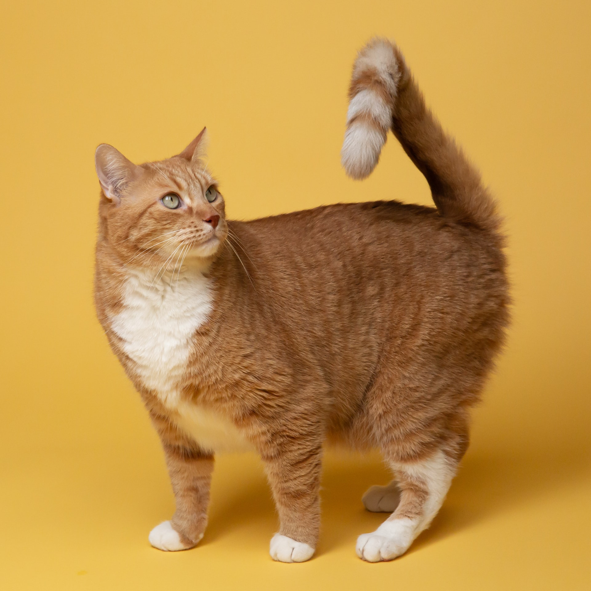

Learning GSAP
Creating ScrollTriggers out of order If you have any ScrollTriggers that pin elements (with the default pinSpacing: true) then the order in which the ScrollTriggers are created is important. This is because any ScrollTriggers after the ScrollTrigger with pinning need to compensate for the extra distance that the pinning adds. You can see an example of how this sort of thing might happen in the pen below. Notice that the third box's animation runs before it's actually in the viewport.
Notice that we want the animation to start mid-screen, but when scrolling backwards we want it to reset at a completely different place (when the element goes offscreen). The solution is to use two ScrollTriggers - one for the playing and one for the resetting once the element is off screen.
let tl = gsap.timeline({
// yes, we can add it to an entire timeline!
scrollTrigger: {
trigger: ".container",
pin: true, // pin the trigger element while active
start: "top top", // when the top of the trigger hits the top of the viewport
end: "+=500", // end after scrolling 500px beyond the start
scrub: 1, // smooth scrubbing, takes 1 second to "catch up" to the scrollbar
snap: {
snapTo: "labels", // snap to the closest label in the timeline
duration: {min: 0.2, max: 3}, // the snap animation should be at least 0.2 seconds, but no more than 3 seconds (determined by velocity)
delay: 0.2, // wait 0.2 seconds from the last scroll event before doing the snapping
ease: "power1.inOut" // the ease of the snap animation ("power3" by default)
}
}
});
// add animations and labels to the timeline
tl.addLabel("start")
.from(".box p", {scale: 0.3, rotation:45, autoAlpha: 0})
.addLabel("color")
.from(".box", {backgroundColor: "#28a92b"})
.addLabel("spin")
.to(".box", {rotation: 360})
.addLabel("end");

